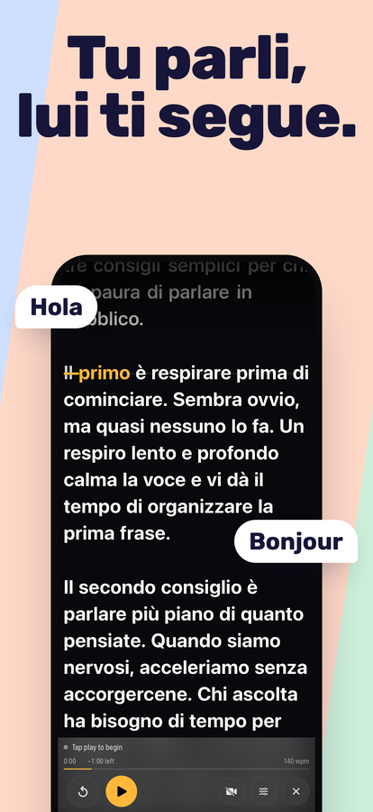
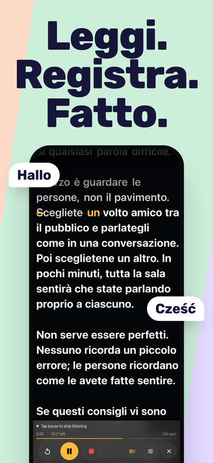
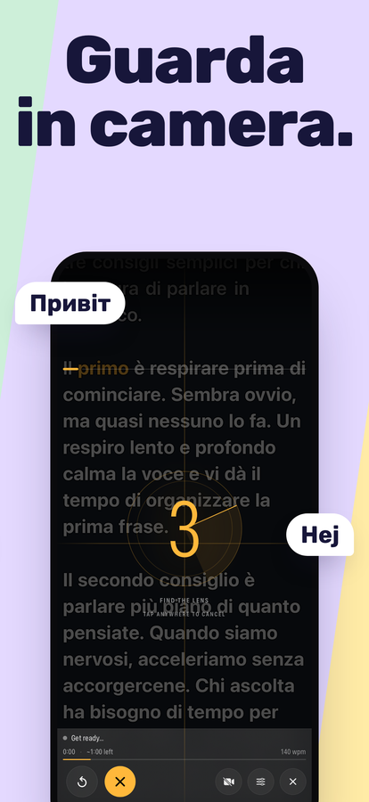
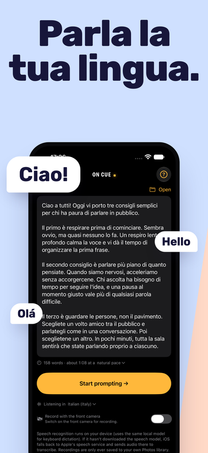

Un teleprompter che segue la tua voce.
Parla, e il copione scorre con te. Fermati, e aspetta. Riformula una frase, salta una parola o ricomincia da capo: non perde il segno, perché ascolta quello che dici davvero invece di scorrere a una velocità fissa che devi inseguire.
Scarica su App StoreiPhone e iPad · iOS 16 o successivo · Acquisto unico, nessun abbonamento, nessun account




Cosa fa
Segue la tua voce
Il riconoscimento vocale confronta quello che dici con il copione e tiene la riga in cui sei sulla linea di lettura. Fermati quanto vuoi. Per andare avanti o indietro di una riga senza toccare il telefono, di' “scroll down” o “scroll up” (i comandi vocali sono in inglese).
Ascolta nella tua lingua
On Cue riconosce la lingua del copione che apri e ascolta in quella: italiano, portoghese o qualsiasi lingua che il tuo iPhone riconosce. Al primo avvio parte dalla lingua del tuo iPhone.
Registra mentre leggi
Un tocco avvia ascolto e ripresa insieme. Registrazione con la fotocamera frontale e il copione in sovrimpressione, salvata direttamente in Foto, alla risoluzione e frequenza dei fotogrammi supportate dal tuo dispositivo.
Regge l'improvvisazione
Uscire dal copione è la norma, non un errore. Salta avanti o improvvisa una frase: ti ritrova invece di restare fermo ad aspettare una parola che non hai mai detto.
Fatto per essere letto
Dimensione del testo e margini regolabili, quattro allineamenti, una linea di lettura che puoi trascinare vicino all'obiettivo e contrasto parola per parola, così il copione resta leggibile anche su un'immagine chiara.
Sa quanto dura
Numero di parole e durata stimata mentre scrivi. Tempo trascorso, tempo rimanente e il tuo ritmo mentre parli, misurato su quanto parli davvero veloce, non presunto.
Resta sul tuo dispositivo
On Cue non invia il tuo copione né le tue registrazioni da nessuna parte. Il riconoscimento vocale avviene sul dispositivo ogni volta che iOS lo consente.